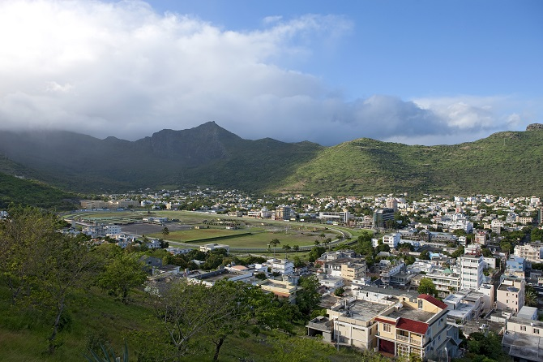
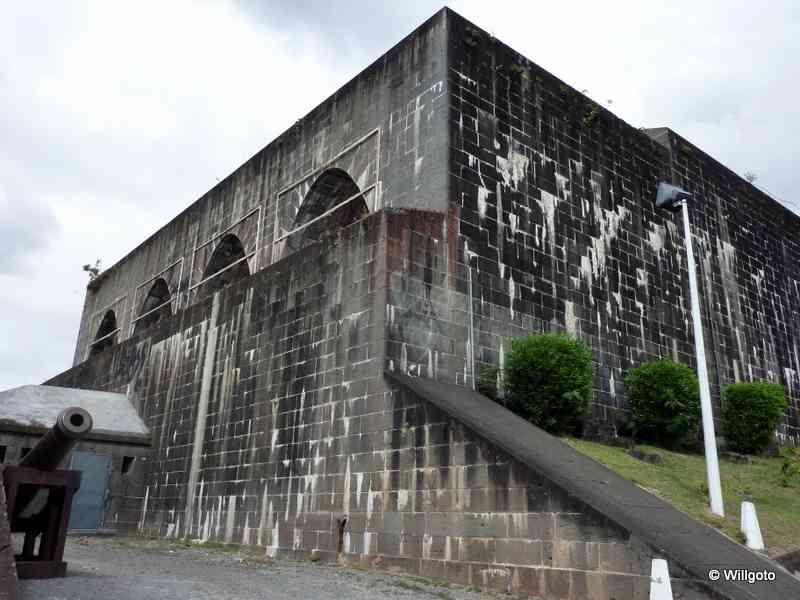
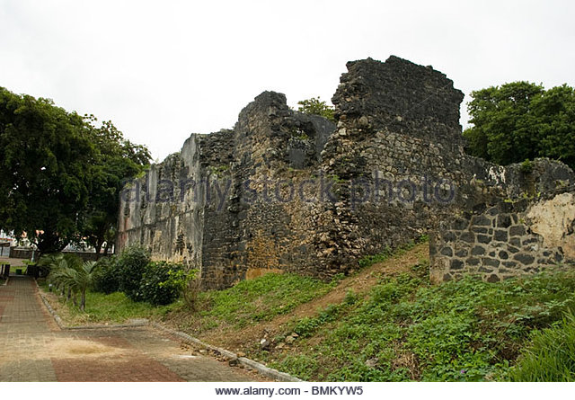
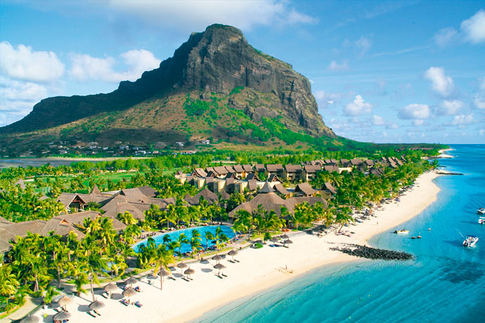
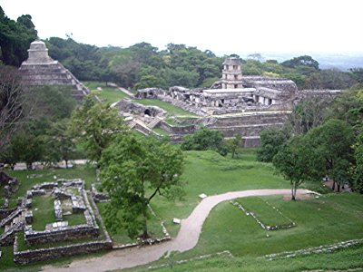
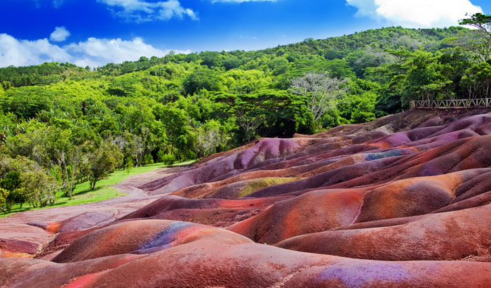
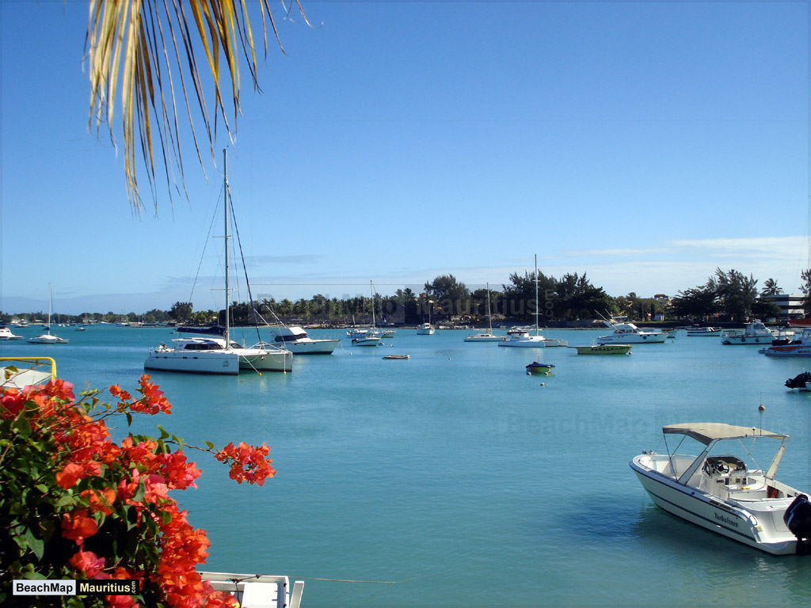
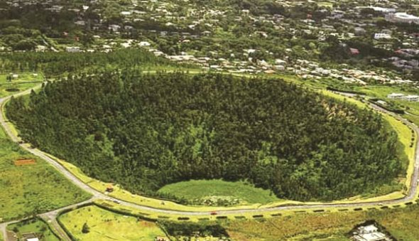

Important
Please note that this Hostel does not have 24 hrs reception. If you are planning to arrive later than 7pm these times please inform the property in advance!
The Hostel has one of the best locations in Mauritius. From the attractive loch-side garden, the views across to mountain range are breathtaking. Good facilities mean the hostel is popular with walkers and tourist alike.
There are otters, badgers and pine martins in the area. Red deer are numerous, and on the mountains ravens, ptarmigan, golden eagles and mountain hares can be seen on occasion
Status hostel is well situated for walking and exploring some of most celebrated sceneries in Mauritus"!
With no mobile phone reception the emphasis here is on tranquillity and relaxation!
What's Included
Accommodation in shared dormitories:
Bunk, pillow, flat sheet and pillow case are provided. You will need to bring your own sleeping bag. Access to shared toilets and washing facilities.Access to self catering facilities. Basic cutlery, crockery and cooking utensils are provided.
Accommodation in group rooms :
Bed with duvet and bed linen. Access to shared toilets, washing facilities. Access to self catering facilities. Basic cutlery, crockery and cooking utensils are provided. Accommodation in double rooms: double bed with duvet and bed linen.
Access to shared toilets, washing facilities. Access to self catering facilities. Basic cutlery, crockery and cooking utensils are provided.
Important Hostel Rules
- Late arrivals please contact us to make arrangements
- The 'No Smoking' policy applies throughout the hostel
- The 'No Smoking' policy applies throughout the hostel
- Please tidy up after yourselves and leave Kitchen and Washrooms in a clean condition
- Breakages and damages (other than minor) must be paid for in full. If we have card details for you, this will be taken automatically
- We operate a 'No Curfew' policy, but we do require that you respect the fact, that other people staying during your visit may need their rest.
- For everyone's comfort we ask that guests are quiet between 23.00 hours and 7.00 hours.
- We reserve the right to ask anyone causing a problem to leave and no refund will be given
- Non - Paying guests for security reasons are not allowed access to the hostel at any time.
- Anyone who interferes with the hostel's fire-fighting apparatus will be prosecuted.
Local Attractions
Signal Mountain
Signal Mountain is one of the most conspicuous landmarks of Port Louis. At 323 metres / 1,059 feet in height, it gives splendid views over the city of Port Louis and the surrounding area.
Fort Adelaide (Citadel)
Building work on Fort Adelaide took ten years to complete and started in 1830. Originally intended as a fortress to protect the British troops from attack by French settlers, by the time it was built, there was little call for its services as a fort. Consequently, it has only really been used as an occasional garrison for troops.
Vieux Grand Port
Located in the south-eastern part of Mauritius, just north of Mahebourg, Vieux Grand Port marks the spot where Dutch sailors first landed on the island in 1638. A fort was built on the site, named after the Dutch ruler Frederik Hendrik, and the remains of this original building can still be seen. By the 18th century, Grand Port was in the hands of the French, who occupied the site until the 19th century, when it came under British administration
Le Morne Brabant
Le Morne is a rugged mountain peninsula that juts out from the south-western tip of Mauritius into the Indian Ocean. It is also a symbol of the fight for freedom made by slaves back in the 18th and 19th centuries. In 2008, the mountain became a World Heritage Site. The peninsula itself gained its name from the rocky crag known as Le Morne Brabant.
Balaclava Ruins
Located at the Baie aux Tortues lie the ruins of a French fort. Built by the island's first French Governor, Balaclava served as an arsenal. Remains that can be seen today include parts of the ancient sea wall, as well as an old flour mill and a lime kiln
Chamarel Coloured Earth
Chamarel is a small village and a major tourist spot located in the south-western of the island. What makes this place unique is the seven coloured layers of sand. It is a unique phenomenon that ttracts people from far and wide. The road to Chamarel is lined with sugarcane and pineapple plantations leading to a valley.
Grand Baie
Grand Baie is a cosmopolitan town located in Rivière du Rempart District, which lies towards northwest of Mauritius. It is a departure point for many cruises towards northern Mauritius; Gunners' Quoin, Flat Island, Round Island, and Serpent Island
Trou aux Cerfs
Trou aux Cerfs is a dormant volcano located in Curepipe. The volcano has a cone and crater and experts believe that the volcano could become active in the coming thousand years.